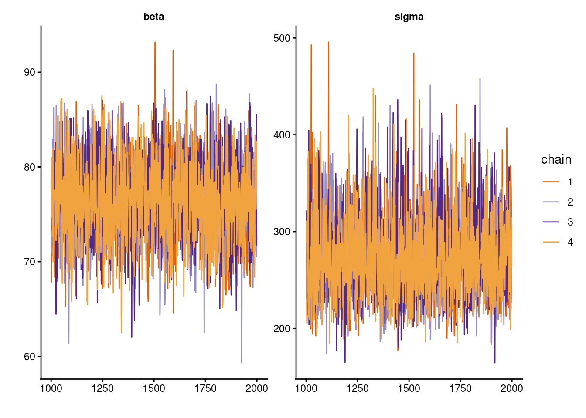
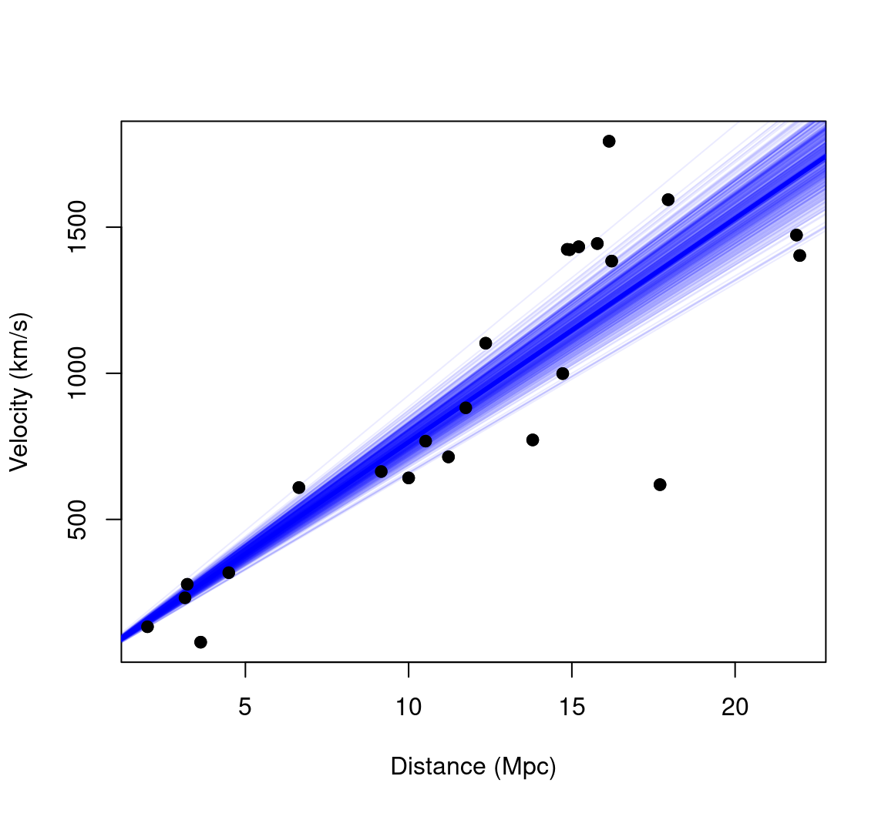
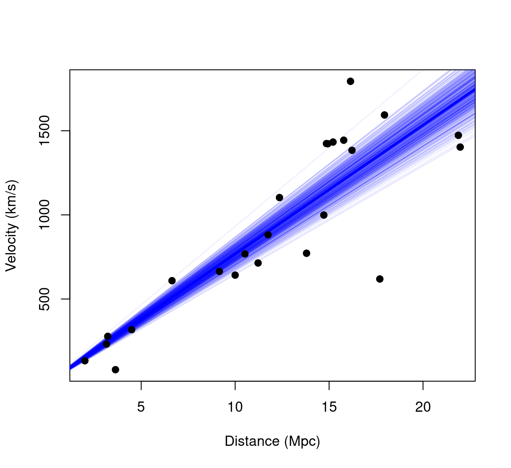
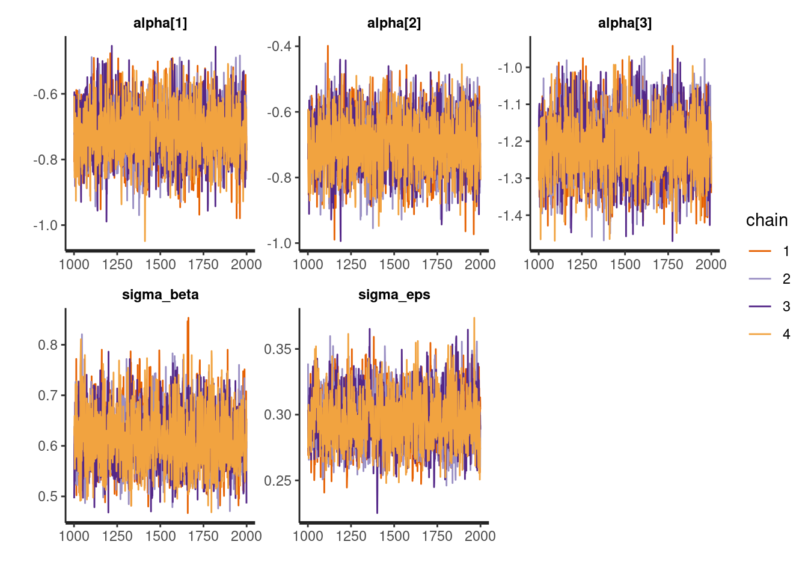
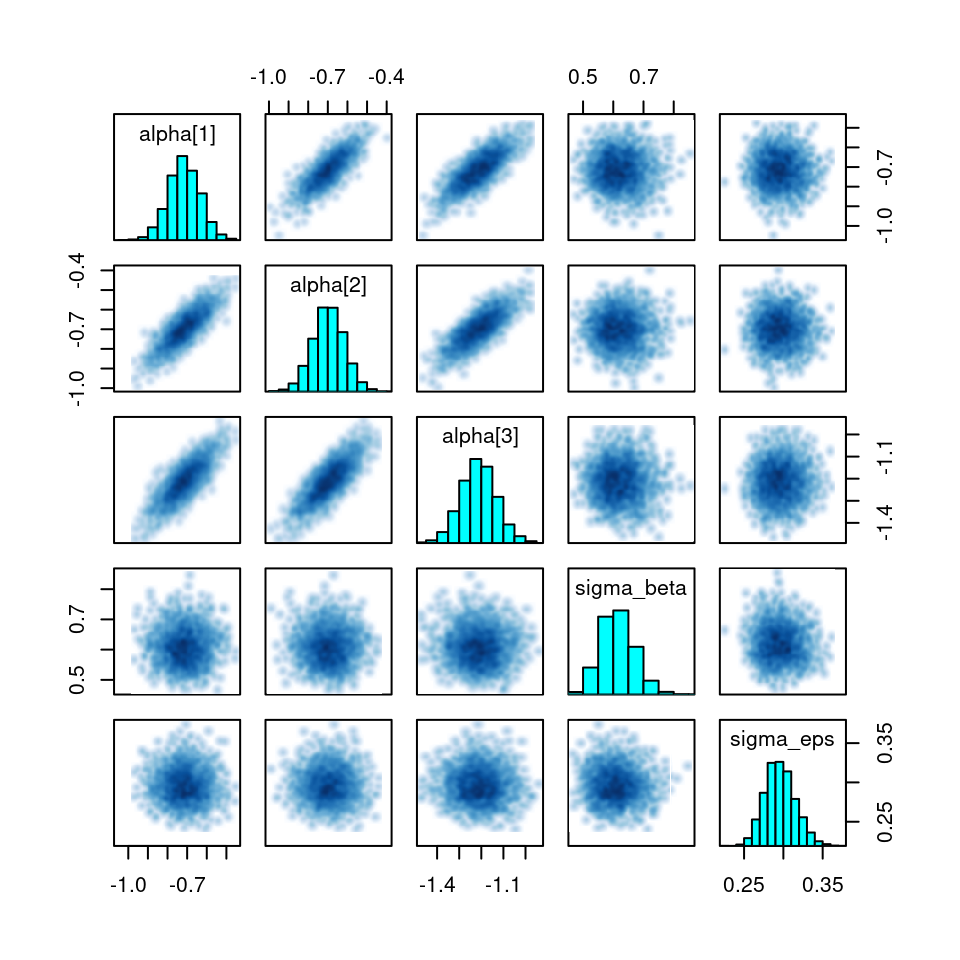
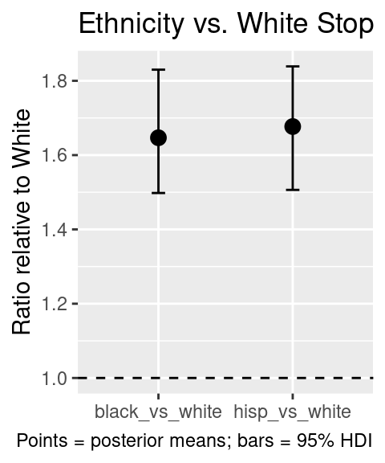
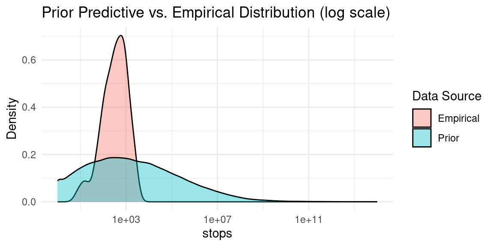
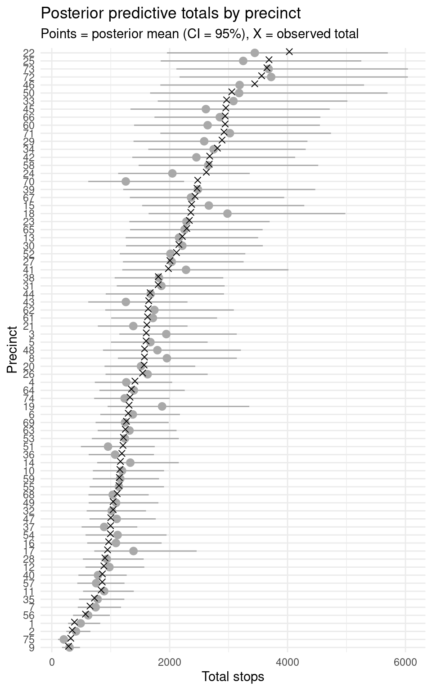
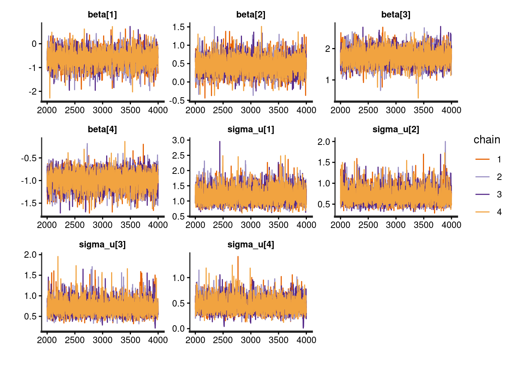
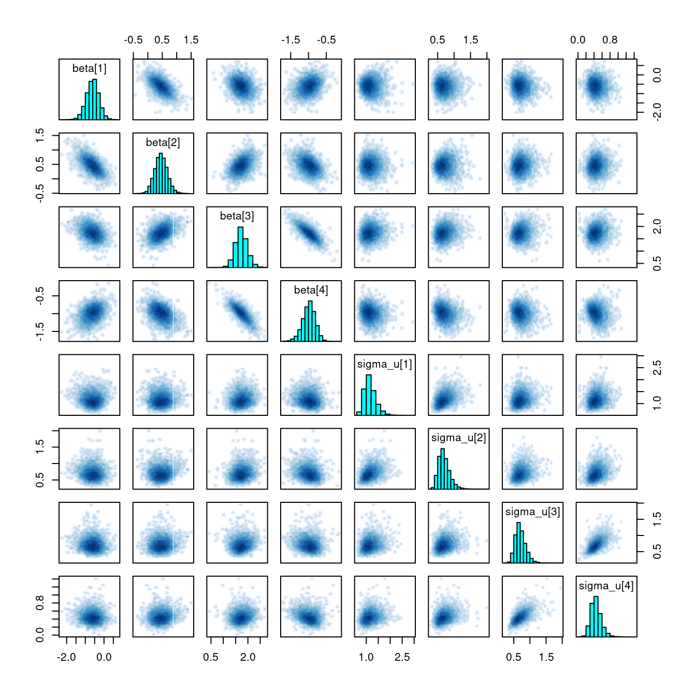

Activity 1 — MCMC “by hand” with Metropolis algorithm (simple linear regression)
Goal: Implement a bare-bones Metropolis sampler for a straight-line model on one participant from sleepstudy. Inspect priors, define the log-likelihood and (unnormalized) log-posterior, write a simple random-walk proposal, run the chain, and compare to least-squares.
Setup
Code
# Packages used herelibrary(lme4) # for the sleepstudy data# alternatively, if your don't have lme4 installedsleepstudy <-read.csv("data/sleepstudy.csv")# Pick example subject and plot their datapar(mfrow =c(1,1))with(sleepstudy[sleepstudy$Subject =="308",],plot(Days, Reaction, pch =19, main ="Subject 308",xlab ="Days of sleep deprivation", ylab ="Reaction time (ms)",xlim =c(-1, 11), ylim =c(200, 500)))
Code
# Save vectors for the model code belowx <- sleepstudy$Days[ sleepstudy$Subject =="308" ]y <- sleepstudy$Reaction[ sleepstudy$Subject =="308" ]
1) Log-likelihood
The model is:\[y_i \sim \mathcal{N}(\alpha + \beta x_i, \sigma_{\epsilon}^2)\]
Where \(\alpha\) is the intercept, and \(\beta\) the slope. We will work with \(\log \sigma_{\epsilon}\) as the third parameter for stability (and so that we don’t need to worry about the lower boundary at zero).
Code
# par = c(intercept, slope, log_sigma)loglik <-function(par){ pred <- par[1] + par[2] * xsum(dnorm(y, mean = pred, sd =exp(par[3]), log =TRUE))}
2) Priors (and a quick visual check)
We use an informative prior, as there is relevant prior knowledge that we can rely on (e.g. that average simple reaction times in humans tend to be around 250 ms): - \(\alpha \sim \mathcal{N} (250, 180^2)\) - \(\beta \sim \mathcal{N} (20, 20^2)\) - \(\log \sigma_{\epsilon} \sim \mathcal{N} (4, 1^2)\)
Code
logprior <-function(par){dnorm(par[1], mean =250, sd =180, log =TRUE) +dnorm(par[2], mean =20, sd =20, log =TRUE) +dnorm(par[3], mean =4, sd =1, log =TRUE)}
Is it useful to visualise it: these are our a prior expectations about plausible parameter values.
Code
par(op <-par(no.readonly =TRUE)); on.exit(par(op), add =TRUE)par(mfrow =c(1,3), mar =c(4,4,2,1))curve(dnorm(x, mean =250, sd =180), from =0, to =1000,xlab ="Intercept", ylab ="prior density", col ="blue")curve(dnorm(x, mean =20, sd =20), from =-50, to =50,xlab ="Slope", ylab ="prior density", col ="blue")xx <-seq(-1, 6, length.out =500)yy <-dnorm(xx, mean =4, sd =1)plot(exp(xx), yy, type ="l", xlab =expression(sigma[epsilon]),ylab ="prior density", col ="blue")
We use a diagonal Gaussian proposal with tunable step sizes.
Code
proposal_sd <-c(15, 5, 0.2) # try tweaking these later proposalfunction <-function(par){rnorm(3, mean = par, sd = proposal_sd)}
5) Metropolis sampler
Code
run_metropolis_MCMC <-function(startvalue, iterations){# set up an empty array to store sampled values chain <-array(dim =c(iterations+1,3))# put starting values at top of arrays chain[1,] <- startvaluefor (i in1:iterations){# draw a random proposal proposal <-proposalfunction(chain[i,])# ratio of posterior density between new and old values a <-exp(logposterior(proposal) -logposterior(chain[i,]))# sample random number & accept/reject the parameter valuesif (runif(1) < a){ chain[i+1,] <- proposal }else{ chain[i+1,] <- chain[i,] } }return(chain)}
6) Run and visualize
Code
# Settingsstartvalue <-c(250, 20, 5) # c(intercept, slope, log_sigma)iterations <-20000# Run chainchain <-run_metropolis_MCMC(startvalue, iterations)# Quick diagnostics and LS referenceburnIn <-3000acceptance <-1-mean(duplicated(chain[-(1:burnIn), ]))LSfit <-lm(y ~ x)interceptLS <-coef(LSfit)[1]slopeLS <-coef(LSfit)[2]sigmaLS <-summary(LSfit)$sigma# Plotspar(mfrow =c(2,3))hist(chain[-(1:burnIn), 1], main ="Intercept", border ="white",col ="dark grey", breaks =20)abline(v = interceptLS, col ="red", lwd =2)hist(chain[-(1:burnIn), 2], main ="Slope", border ="white",col ="dark grey", breaks =20)abline(v = slopeLS, col ="red", lwd =2)hist(exp(chain[-(1:burnIn), 3]), main =expression(sigma[epsilon]),border ="white", col ="dark grey", breaks =20)abline(v = sigmaLS, col ="red", lwd =2)plot(chain[-(1:burnIn), 1], type ="l", main ="Chain values: intercept")abline(h = interceptLS, col ="red", lwd =2)plot(chain[-(1:burnIn), 2], type ="l", main ="Chain values: slope")abline(h = slopeLS, col ="red", lwd =2)plot(exp(chain[-(1:burnIn), 3]), type ="l", main ="Chain values: sigma")abline(h = sigmaLS, col ="red", lwd =2)
Experiment by changing the priors and the proposal distribution, then run the sampler again. Observe how these changes affect convergence, acceptance rate, and the shape and location of the posterior distributions.
Activity 2 — Linear regression in Stan
Goal: Fit a no-intercept Bayesian linear regression to the Hubble data in Stan, check convergence, summarize the posterior for β and σ, and then transform the posterior for β into a posterior for the age of the universe (in billions of years). Finally, visualize uncertainty both on the parameter and data scales.
print(fit, pars =c("beta","sigma"), probs =c(.025,.5,.975))
Inference for Stan model: anon_model.
4 chains, each with iter=2000; warmup=1000; thin=1;
post-warmup draws per chain=1000, total post-warmup draws=4000.
mean se_mean sd 2.5% 50% 97.5% n_eff Rhat
beta 76.55 0.08 4.19 68.35 76.50 84.84 2558 1
sigma 273.50 0.97 44.17 204.91 267.99 380.80 2092 1
Samples were drawn using NUTS(diag_e) at Thu Nov 6 17:12:27 2025.
For each parameter, n_eff is a crude measure of effective sample size,
and Rhat is the potential scale reduction factor on split chains (at
convergence, Rhat=1).
Code
traceplot(fit, pars =c("beta","sigma"))

3) Extract posterior draws and estimate the age of the universe
Code
mpc_km <-3.09e19# km per Megaparsecsec_per_year <-60^2*24*365# transform in Kmhubble.const <- posterior_samples$beta/ mpc_km # invert to get age in secondsage <-1/hubble.const# transform age in billion yearsage <- (age/sec_per_year) /10^9# point estimatemean(age)
[1] 12.83895
We can use a percentile method to determine a credibility interval
The percentile method works well in most cases but can be misleading for asymmetric posteriors, where for example the mode (the most probable value) may fall outside the interval. A highest posterior density (HPD, also referred to as HDI) interval is the shortest interval containing a specified proportion of the posterior mass. Every point inside has higher probability density than any point outside.
In our example, the posterior for β is roughly symmetric, so percentile and HPD intervals are nearly identical.
Here is how we can compute this using the handy tidybayes package
Code
fit %>%spread_draws(beta) %>%mean_hdi(beta, .width =0.95)
Visualise posterior over the age of the universe as simple histogram
Code
hist(age, breaks =30, xlab="time (billions of years)")
We can make this a bit nicer e.g. by adding smooth density curve and credible interval
Code
# Get HDI intervalhdi <-mean_hdi(age, .width =0.95)# Compute densitydens <-density(age, adjust=2)# Plotplot(dens, main ="", xlab ="time (billions of years)", lwd =2)# Fill inside HDIpolygon(c(dens$x[dens$x >= hdi$ymin & dens$x <= hdi$ymax], hdi$ymax, hdi$ymin),c(dens$y[dens$x >= hdi$ymin & dens$x <= hdi$ymax], 0, 0),col ="blue", border =NA)# Fill outside HDIpolygon(c(dens$x[dens$x < hdi$ymin], hdi$ymin, dens$x[1]),c(dens$y[dens$x < hdi$ymin], 0, 0),col ="gray90", border =NA)polygon(c(hdi$ymax, dens$x[dens$x > hdi$ymax], rev(dens$x[dens$x > hdi$ymax])[1]),c(0, dens$y[dens$x > hdi$ymax], 0),col ="gray90", border =NA)# Redraw density line on toplines(dens, lwd =3)

We can also visualise posterior samples as regression lines, to give a visual summary of the precision of model predictions
Code
# basic plotplot(d$distance, d$velocity, xlab ="Distance (Mpc)", ylab ="Velocity (km/s)", pch =19)# draw a subset of posterior linesidx <-sample(seq_along(posterior_samples$beta), 500)for(i in idx){abline(a =0, b = posterior_samples$beta[i], lwd =1, col =rgb(0,0,1,0.08))}abline(a =0, b =median(posterior_samples$beta), lwd =3, col ="blue")# (redraw the points to prevent them being hidden by the lines)points(d$distance, d$velocity, pch=19)

Using the “Generated quantities” block
Stan models have also other types of block. One of them is the generated quantities block, which we can use to compute quantities of interest that depends on posterior parameters. in this block we can include also functions that simulates data, so it is useful for things such as posterior predictive checks.
Inference for Stan model: anon_model.
4 chains, each with iter=2000; warmup=1000; thin=1;
post-warmup draws per chain=1000, total post-warmup draws=4000.
mean se_mean sd 2.5% 50% 97.5% n_eff Rhat
beta 76.54 0.08 4.13 68.52 76.57 84.51 3001 1
sigma 273.78 0.79 42.82 204.53 268.59 369.80 2928 1
age_universe 12.84 0.01 0.70 11.59 12.80 14.30 2981 1
Samples were drawn using NUTS(diag_e) at Fri Nov 7 14:52:42 2025.
For each parameter, n_eff is a crude measure of effective sample size,
and Rhat is the potential scale reduction factor on split chains (at
convergence, Rhat=1).
Activity 3 — Overdispersed Poisson GLMM
Goal: Model the rate of police stops across ethnic groups and precincts, adjusting for exposure (arrests) and allowing for overdispersion and hierarchical structure.
Context: Study of the NYPD stop-and-frisk policy, investigating possible ethnic bias in police stops.
Source: Records of ≈175,000 stops over 15 months (1998–1999), obtained by the New York State Attorney General’s Office.
Variables:
stops — Number of police stops recorded in 1998–1999 for the cell.
pop — Estimated population size of the ethnic group within the precinct (exposure candidate).
past.arrests — Number of 1997 arrests (DCJS) for the same group/crime category (proxy for crime exposure).
We first add crime and stop counts over crime type (i.e. we are pooling together all crime types)
Code
d <- d %>%group_by(precinct, eth) %>%summarise(stops =sum(stops),past.arrests =sum(past.arrests),pop =unique(pop))
Compute summary statistics (averaging across the whole city).
Code
d_summaries <- d %>%mutate(eth =case_when( eth ==1~"black", eth ==2~"hispanic", eth ==3~"white" )) %>%group_by(eth) %>%summarise(pop =sum(pop),total_stops =sum(stops),total_arrests =sum(past.arrests),.groups ="drop" ) %>%mutate(prop_of_all_stops = total_stops /sum(total_stops),pop_fraction = pop /sum(pop) )d_summaries
# A tibble: 3 × 6
eth pop total_stops total_arrests prop_of_all_stops pop_fraction
<chr> <dbl> <dbl> <dbl> <dbl> <dbl>
1 black 1865895 69823 125719 0.531 0.275
2 hispanic 1732269 44623 74898 0.340 0.256
3 white 3175354 16974 35922 0.129 0.469
1) Prepare data for Stan
Important: If past.arrests == 0 for some rows but stops are nonzero, we need to avoid a zero Poisson mean. In this case however no adjustment is needed (otherwise we could have added a small constant, e.g. 0.5, to zeroes in past.arrests)
instead of sampling \(\beta_p\) directly from \(N(0,\sigma_\beta^2)\). This often improves sampling efficiency in hierarchical models. The same logic applies to (_{ep}).
3) Compile and run
Code
fit <-stan(file ="stan_code/overdispersed_poisson.stan",data = stan_data,iter =2000,chains =4,cores =4)
We can use the print method for a quick look at the results
Code
print(fit, pars =c("alpha", "sigma_beta", "sigma_eps"))
Inference for Stan model: anon_model.
4 chains, each with iter=2000; warmup=1000; thin=1;
post-warmup draws per chain=1000, total post-warmup draws=4000.
mean se_mean sd 2.5% 25% 50% 75% 97.5% n_eff Rhat
alpha[1] -0.72 0 0.08 -0.88 -0.77 -0.72 -0.66 -0.56 2442 1
alpha[2] -0.70 0 0.08 -0.86 -0.75 -0.70 -0.64 -0.54 2473 1
alpha[3] -1.21 0 0.08 -1.37 -1.27 -1.21 -1.16 -1.05 2347 1
sigma_beta 0.61 0 0.05 0.52 0.58 0.61 0.65 0.73 3035 1
sigma_eps 0.30 0 0.02 0.26 0.28 0.29 0.31 0.34 1727 1
Samples were drawn using NUTS(diag_e) at Thu Nov 13 16:48:22 2025.
For each parameter, n_eff is a crude measure of effective sample size,
and Rhat is the potential scale reduction factor on split chains (at
convergence, Rhat=1).
Here, alpha are the ethnic-group log-effects, sigma_beta is the precinct-level standard deviation, and sigma_eps is the observation-level overdispersion parameter.
4) Diagnostic checks
Code
# Traceplotstraceplot(fit, pars =c("alpha", "sigma_beta", "sigma_eps"))

Code
# Pairs plot for some key parameterspairs(fit, pars =c("alpha[1]", "alpha[2]", "alpha[3]", "sigma_beta", "sigma_eps"))

5) Inference
We use tidybayes to extract samples and summarize. Suppose we want to look at the exponentiated ethnic effects (relative stops vs. arrests).
Code
library(tidybayes)posterior <- fit %>%spread_draws(alpha[e]) %>%mutate(rate =exp(alpha)) # exponentiate to interpret as a multiplicative factor# Summarize the rate by ethnicityposterior %>%group_by(e) %>%mean_hdi(rate, .width =0.95)
# A tibble: 3 × 7
e rate .lower .upper .width .point .interval
<int> <dbl> <dbl> <dbl> <dbl> <chr> <chr>
1 1 0.491 0.412 0.567 0.95 mean hdi
2 2 0.500 0.425 0.583 0.95 mean hdi
3 3 0.298 0.252 0.346 0.95 mean hdi
If e=1 = black, e=2 = hispanic, e=3 = white, these give the average ratio of stops to arrests for each ethnicity, accounting for precinct and overdispersion.
You might then compare black vs. white, etc., by calculating differences or ratios in the posterior draws.
Code
posterior_ratios <- posterior %>%pivot_wider(id_cols =c(.chain, .iteration, .draw), # these 3 columns identify each drawnames_from = e, # which column to pivot onvalues_from = rate, # which column holds the valuesnames_prefix ="eth_") %>%mutate(black_vs_white = eth_1 / eth_3,hisp_vs_white = eth_2 / eth_3) %>%# Pivot longer so each ratio is in its own rowpivot_longer(cols =c(black_vs_white, hisp_vs_white),names_to ="contrast",values_to ="ratio" ) %>%# Summarize with mean_hdi -> returns columns .mean, .lower, .uppergroup_by(contrast) %>%mean_hdi(ratio, .width =0.95)posterior_ratios
# A tibble: 2 × 7
contrast ratio .lower .upper .width .point .interval
<chr> <dbl> <dbl> <dbl> <dbl> <chr> <chr>
1 black_vs_white 1.65 1.50 1.83 0.95 mean hdi
2 hisp_vs_white 1.68 1.51 1.84 0.95 mean hdi
This gives an estimate of how many times more likely stops of black (or hispanic) are relative to stops of white people, after controlling for arrests, precinct differences, and overdispersion.
To visualise this with a plot:
Code
ggplot(posterior_ratios, aes(x = contrast, y = ratio)) +geom_point(size=3) +geom_hline(yintercept=1, lty=2)+geom_errorbar(aes(ymin = .lower, ymax = .upper), width =0.1) +labs(x =NULL,y ="Ratio relative to White",title ="Ethnicity vs. White Stop Ratios",caption ="Points = posterior means; bars = 95% HDI" )

5) Prior predictive check
To check that the prior is sensible, it can be useful to simulate the prior predictive distribution and compare it to the actual, observed data. This is defined as
\[p(y) = \int p(y\mid \Theta) \ p( \Theta) d\Theta \] where \(\Theta\) indicate the parameters, in this case \(\Theta = \left\{ \alpha, \sigma_{\beta}, \sigma_{\epsilon} \right\}\).
In other words, we resample both observation-level over dispersion values, the precinct-specific random intercepts, as well as the poisson observations. This gives us a way to estimate the prior predictive distribution, which we can then compare to the actual data. Ideally, the observed data should lie well within the prior-predictive distribution, suggesting that our priors were adequate and not too informative.
Code
N <-nrow(d)n_eth <-length(unique(d$eth))n_prec <-length(unique(d$precinct))# Decide how many draws from the prior to simulaten_sims <-500# We'll store all simulated Y values in a single big vector# so we can compare them to the observed distributionall_prior_stops <-numeric(0)set.seed(42) # reproducibilityfor (s in1:n_sims) {# 1) Sample the parameters from their priors alpha_draw <-rnorm(n_eth, mean =0, sd =5) # alpha: one for each ethnicity sigma_beta_draw <-rexp(1, rate =1) beta_raw_draw <-rnorm(n_prec, 0, 1) beta_draw <- sigma_beta_draw * beta_raw_draw sigma_eps_draw <-rexp(1, rate =1) # Overdispersion eps_raw_draw <-rnorm(N, 0, 1) eps_draw <- sigma_eps_draw * eps_raw_draw# 2) Generate y (stops) from Poisson for each observation i past_arrests_offset <-ifelse(d$past.arrests ==0, 0.5, d$past.arrests)# compute the linear predictor for each row i lambda_vec <-numeric(N)for (i inseq_len(N)) { e <- d$eth[i] p <- d$precinct[i] lambda_vec[i] <- alpha_draw[e] + beta_draw[p] + eps_draw[i] }# Poisson means mu_vec <- past_arrests_offset * (15/12) *exp(lambda_vec)# sample from Poisson y_sim <-rpois(N, mu_vec)# 3) Store in a big vector for later comparison all_prior_stops <-c(all_prior_stops, y_sim)}
Now we have the number of ‘stops’ simulated from the prior, and we can compare with the empirical distribution:
Code
observed_stops <- d$stopsdf_plot <-tibble(value =c((observed_stops ), (all_prior_stops )),type =rep(c("Empirical", "Prior"), c(length(observed_stops), length(all_prior_stops))))# Plot densitiesggplot(df_plot, aes(x = value, fill = type)) +geom_density(alpha =0.4) +labs(x ="stops", y ="Density",title ="Prior Predictive vs. Empirical Distribution (log scale)",fill ="Data Source" ) +theme_minimal()+scale_x_log10()

6) Posterior predictive check
We can use a similar approach to compare the posterior distribution to the observed data. That is, we are comparing the data with the posterior predictive distribution
\[p(y^{\text{rep}} \mid y) = \int p(y^{\text{rep}} \mid \Theta) \ p( \Theta \mid y) d\Theta \] It may be useful to not resample all of the random effects; in this case for example I decided to hold fixed the precinct-specific random intercepts, and to resample only the observation-level overdispersion values.
This allows me to compute a predictive interval for the stop rate in each precinct, which allows more granularity in the comparison between model and data.
There are different ways to do this, either via R (as in the prior predictive check above) or we can take advantage of the generated quantities block in Stan, and add the following to our model code:
generated quantities {vector[N] log_lik; // Log-likelihood for each observation (for LOO-CV)real eps_rep; // random effects observation-level overdipersionarray[N] int y_rep;for (i in1:N) {// Compute log-likelihood for observed data log_lik[i] = poisson_lpmf(y[i] | past_arrests[i] * (15.0 / 12.0) * exp(alpha[eth[i]] + beta[precinct[i]] + eps[i]));// Simulate replicated data from posterior predictive distribution eps_rep = sigma_eps * normal_rng(0, 1); y_rep[i] = poisson_rng(past_arrests[i] * (15.0 / 12.0) * exp(alpha[eth[i]] + beta[precinct[i]] + eps_rep)); }}
Assuming the code is saved in the file stan_code/overdispersed_poisson_PPC.stan, we then need to re-do the sampling:
Code
fit <-stan(file ="stan_code/overdispersed_poisson_PPC.stan",data = stan_data,iter =2000,chains =4,cores =4)
Once we have run that, we can extract the posterior predictive for each precinct, and plot them alongside the observed.
Code
# Map observation index -> precinctprecinct_idx <- d$precinct # length N# Observed precinct totalsobs_totals <- d %>%group_by(precinct) %>%summarise(obs_total =sum(stops), .groups ="drop")# Exposure per precinct (for *rates* option)exposure_by_precinct <- d %>%mutate(expo = past.arrests * (15/12)) %>%group_by(precinct) %>%summarise(exposure =sum(expo), .groups ="drop")# 1) Extract posterior predictive draws for y_rep[i]yrep_long <- fit %>%spread_draws(y_rep[i]) %>%mutate(precinct = precinct_idx[i])# 2) Aggregate to precinct totals per drawppc_totals <- yrep_long %>%group_by(.draw, precinct) %>%summarise(rep_total =sum(y_rep), .groups ="drop")# 3a) (Totals) Summarise mean and 95% CI per precinctppc_totals_sum <- ppc_totals %>%group_by(precinct) %>%mean_qi(rep_total, .width =0.95) %>%# columns: rep_total, .lower, .upperungroup() %>%left_join(obs_totals, by ="precinct")ppc_totals_sum_ord <- ppc_totals_sum %>%mutate(precinct_ord =fct_reorder(factor(precinct), obs_total))# 4a) Plot totals: posterior predictive (mean + 95% CI) vs observedppc_totals_sum %>%mutate(precinct =fct_reorder(factor(precinct), obs_total)) %>%ggplot(aes(x =factor(precinct), y = rep_total)) +geom_pointrange(aes(ymin = .lower, ymax = .upper), color="dark grey") +geom_point(aes(y = obs_total), shape =4, size =2, position =position_nudge(x =0.15)) +labs(x ="Precinct", y ="Total stops",title ="Posterior predictive totals by precinct",subtitle ="Points = posterior mean (CI = 95%), X = observed total") +coord_flip() +theme_minimal()

Activity 4 — Lapse-augmented probit GLMM
Goal: Model binary perceptual choices (left/right) as a function of signed distance, allowing precision and bias to vary across conditions and observers, and incorporating an observer-specific lapse rate to capture random guessing.
Setup
Load data into R
Code
d <-read.table("data/bisection2.txt", sep="\t",header=T)str(d)
List of 6
$ id : num [1:4593] 1 1 1 1 1 1 1 1 1 1 ...
$ ds : num [1:4593] 0.04 -0.04 -0.53 -0.53 -0.36 0.44 0.53 0.69 0.93 -1.09 ...
$ rr : int [1:4593] 1 1 0 1 0 1 0 1 0 0 ...
$ N : int 4593
$ J : int 13
$ cond: num [1:4593] 0 1 0 1 1 0 1 1 1 1 ...
2) Stan code
Model code available in stan_code/psyGLMM.stan
data {int<lower=1> N;array[N] int<lower=0, upper=1> rr;array[N] real ds;array[N] int<lower=0,upper=1> cond;int<lower=1> J;array[N] int<lower=1,upper=J> id;}parameters {vector[4] beta; // fixed-effects parametersvector<lower=0,upper=1>[J] lambda; // lapse ratevector<lower=0>[4] sigma_u; // random effects standard deviationscholesky_factor_corr[4] L_u; // L_u is the Choleski factor of the correlation matrixmatrix[4,J] z_u; // random effect matrix}transformed parameters {matrix[4,J] u; u = diag_pre_multiply(sigma_u, L_u) * z_u; // use Cholesky to set correlation}model {real mu; // linear predictor//priors L_u ~ lkj_corr_cholesky(2); // LKJ prior for the correlation matrix to_vector(z_u) ~ normal(0,1); // before Cholesky, random effects are normal variates with SD=1 sigma_u ~ cauchy(0, 1); // SD of random effects (vectorized) beta ~ normal(0, 2); // prior lambda ~ beta(1, 7); // lapse rate ~50% prior that <0.1, pbeta(0.1, 1, 7)//likelihoodfor (i in1:N){ mu = beta[1] + u[1,id[i]] + cond[i]*(beta[2]+u[2,id[i]]) + (beta[3] + u[3,id[i]] + cond[i]*(beta[4] + u[4,id[i]] ))*ds[i]; rr[i] ~ bernoulli((1-lambda[id[i]])*Phi(mu)+lambda[id[i]]/2); }}
3) Compile and run
Code
fit <-stan(file ="stan_code/psyGLMM.stan", data = d_stan, iter =4000, chains =4)
We can use the usual functions to check that the models has converged
Code
traceplot(fit, pars =c("beta", "sigma_u"))

Code
# Pairs plot for some key parameterspairs(fit, pars =c("beta", "sigma_u"))

Code
print(fit, pars =c("beta", "sigma_u"), probs =c(0.025, 0.975), digits =3)
Inference for Stan model: anon_model.
4 chains, each with iter=4000; warmup=2000; thin=1;
post-warmup draws per chain=2000, total post-warmup draws=8000.
mean se_mean sd 2.5% 97.5% n_eff Rhat
beta[1] -0.611 0.008 0.337 -1.288 0.055 1979 1.001
beta[2] 0.458 0.004 0.225 0.023 0.911 2962 1.000
beta[3] 1.730 0.004 0.241 1.275 2.221 3603 1.000
beta[4] -0.986 0.003 0.179 -1.365 -0.662 3479 1.001
sigma_u[1] 1.161 0.004 0.248 0.779 1.751 3251 1.001
sigma_u[2] 0.696 0.003 0.173 0.425 1.094 3536 1.000
sigma_u[3] 0.706 0.003 0.169 0.435 1.096 3126 1.003
sigma_u[4] 0.443 0.003 0.132 0.225 0.741 2350 1.004
Samples were drawn using NUTS(diag_e) at Mon Feb 16 18:12:28 2026.
For each parameter, n_eff is a crude measure of effective sample size,
and Rhat is the potential scale reduction factor on split chains (at
convergence, Rhat=1).
4) Inference
The package tidybayes has useful function to visualise the posterior distribution of model parameters:
Rather than GLMM coefficients, the measures of interests are the mean and SD of the cumulative Gaussian function used to model choice probabilities. The coefficients of the GLM can be straighforwardly mapped to the parameters of the psychometric function \[
\begin{align}
p \left(y_i\right) & = \Phi\left(\frac{x_i -\mu}{\sigma} \right) \\
& = \Phi ( -\frac{\mu}{\sigma} + \frac{1}{\sigma}x_i )\\
& = \Phi\left(\beta_0 + \beta_1x_i \right) \\ \\& \mu=-\frac{\beta_0}{\beta_1}, \,\,\, \sigma=\frac{1}{\beta_1} \\
\end{align}
\] We can use these relationships to estimate a Bayesian CI around the difference in the slope of the functions across the two conditions:
# A tibble: 3 × 7
quantity value .lower .upper .width .point .interval
<chr> <dbl> <dbl> <dbl> <dbl> <chr> <chr>
1 JND_1 0.590 0.428 0.750 0.95 mean hdi
2 JND_2 1.41 0.882 2.02 0.95 mean hdi
3 JND_diff 0.816 0.379 1.33 0.95 mean hdi
Source Code
---title: "PGR Training: Bayesian modelling in R and Stan<br> Worksheet"author: "Matteo Lisi"format: html: toc: true code-tools: true # run/copy buttons code-fold: showexecute: echo: true warning: false message: false---```{r, echo=FALSE, message=FALSE}library(tidyverse)library(rstan)library(lme4)```## Activity 1 — MCMC "by hand" with Metropolis algorithm (simple linear regression)> Goal: Implement a bare-bones Metropolis sampler for a straight-line model on one participant from `sleepstudy`. Inspect priors, define the log-likelihood and (unnormalized) log-posterior, write a simple random-walk proposal, run the chain, and compare to least-squares.#### Setup```{r}#| fig-align: 'center'#| fig-cap-location: margin#| fig-width: 4#| fig-height: 4.5# Packages used herelibrary(lme4) # for the sleepstudy data# alternatively, if your don't have lme4 installedsleepstudy <-read.csv("data/sleepstudy.csv")# Pick example subject and plot their datapar(mfrow =c(1,1))with(sleepstudy[sleepstudy$Subject =="308",],plot(Days, Reaction, pch =19, main ="Subject 308",xlab ="Days of sleep deprivation", ylab ="Reaction time (ms)",xlim =c(-1, 11), ylim =c(200, 500)))# Save vectors for the model code belowx <- sleepstudy$Days[ sleepstudy$Subject =="308" ]y <- sleepstudy$Reaction[ sleepstudy$Subject =="308" ]```##### 1) Log-likelihoodThe model is:$$y_i \sim \mathcal{N}(\alpha + \beta x_i, \sigma_{\epsilon}^2)$$Where $\alpha$ is the intercept, and $\beta$ the slope. We will work with $\log \sigma_{\epsilon}$ as the third parameter for stability (and so that we don't need to worry about the lower boundary at zero).```{r}# par = c(intercept, slope, log_sigma)loglik <-function(par){ pred <- par[1] + par[2] * xsum(dnorm(y, mean = pred, sd =exp(par[3]), log =TRUE))}```##### 2) Priors (and a quick visual check)We use an informative prior, as there is relevant prior knowledge that we can rely on (e.g. that average simple reaction times in humans tend to be around 250 ms):- $\alpha \sim \mathcal{N} (250, 180^2)$- $\beta \sim \mathcal{N} (20, 20^2)$- $\log \sigma_{\epsilon} \sim \mathcal{N} (4, 1^2)$```{r}logprior <-function(par){dnorm(par[1], mean =250, sd =180, log =TRUE) +dnorm(par[2], mean =20, sd =20, log =TRUE) +dnorm(par[3], mean =4, sd =1, log =TRUE)}```Is it useful to visualise it: these are our _a prior_ expectations about plausible parameter values.```{r}#| fig-align: 'center'#| fig-width: 9#| fig-height: 3par(op <-par(no.readonly =TRUE)); on.exit(par(op), add =TRUE)par(mfrow =c(1,3), mar =c(4,4,2,1))curve(dnorm(x, mean =250, sd =180), from =0, to =1000,xlab ="Intercept", ylab ="prior density", col ="blue")curve(dnorm(x, mean =20, sd =20), from =-50, to =50,xlab ="Slope", ylab ="prior density", col ="blue")xx <-seq(-1, 6, length.out =500)yy <-dnorm(xx, mean =4, sd =1)plot(exp(xx), yy, type ="l", xlab =expression(sigma[epsilon]),ylab ="prior density", col ="blue")```##### 3) Unnormalized log-posterior```{r}logposterior <-function(par){loglik(par) +logprior(par)}```##### 4) Random-walk proposalWe use a diagonal Gaussian proposal with tunable step sizes.```{r}proposal_sd <-c(15, 5, 0.2) # try tweaking these later proposalfunction <-function(par){rnorm(3, mean = par, sd = proposal_sd)}```##### 5) Metropolis sampler```{r}run_metropolis_MCMC <-function(startvalue, iterations){# set up an empty array to store sampled values chain <-array(dim =c(iterations+1,3))# put starting values at top of arrays chain[1,] <- startvaluefor (i in1:iterations){# draw a random proposal proposal <-proposalfunction(chain[i,])# ratio of posterior density between new and old values a <-exp(logposterior(proposal) -logposterior(chain[i,]))# sample random number & accept/reject the parameter valuesif (runif(1) < a){ chain[i+1,] <- proposal }else{ chain[i+1,] <- chain[i,] } }return(chain)}```##### 6) Run and visualize```{r}# Settingsstartvalue <-c(250, 20, 5) # c(intercept, slope, log_sigma)iterations <-20000# Run chainchain <-run_metropolis_MCMC(startvalue, iterations)# Quick diagnostics and LS referenceburnIn <-3000acceptance <-1-mean(duplicated(chain[-(1:burnIn), ]))LSfit <-lm(y ~ x)interceptLS <-coef(LSfit)[1]slopeLS <-coef(LSfit)[2]sigmaLS <-summary(LSfit)$sigma# Plotspar(mfrow =c(2,3))hist(chain[-(1:burnIn), 1], main ="Intercept", border ="white",col ="dark grey", breaks =20)abline(v = interceptLS, col ="red", lwd =2)hist(chain[-(1:burnIn), 2], main ="Slope", border ="white",col ="dark grey", breaks =20)abline(v = slopeLS, col ="red", lwd =2)hist(exp(chain[-(1:burnIn), 3]), main =expression(sigma[epsilon]),border ="white", col ="dark grey", breaks =20)abline(v = sigmaLS, col ="red", lwd =2)plot(chain[-(1:burnIn), 1], type ="l", main ="Chain values: intercept")abline(h = interceptLS, col ="red", lwd =2)plot(chain[-(1:burnIn), 2], type ="l", main ="Chain values: slope")abline(h = slopeLS, col ="red", lwd =2)plot(exp(chain[-(1:burnIn), 3]), type ="l", main ="Chain values: sigma")abline(h = sigmaLS, col ="red", lwd =2)```##### 7) Summaries (credible interval for slope)```{r}# Remove initial burn-inburnIn <-5000slope_samples <- chain[-(1:burnIn), 2]# Posterior meanmean(slope_samples)# 95% credible interval (percentile method)alpha <-0.05round(c(quantile(slope_samples, probs = alpha/2),quantile(slope_samples, probs =1- alpha/2)), 2)```#### Further taskExperiment by changing the priors and the proposal distribution, then run the sampler again. Observe how these changes affect convergence, acceptance rate, and the shape and location of the posterior distributions.## Activity 2 — Linear regression in Stan> Goal: Fit a no-intercept Bayesian linear regression to the Hubble data in Stan, check convergence, summarize the posterior for β and σ, and then transform the posterior for β into a posterior for the age of the universe (in billions of years). Finally, visualize uncertainty both on the parameter and data scales.#### SetupLoad data```{r}d <-read.csv("data/hubble.csv")str(d)head(d)```Quick plot```{r}#| fig-align: 'center'#| fig-cap-location: margin#| fig-width: 4#| fig-height: 4.5plot(d$distance, d$velocity,xlab="Distance [Mpc]", ylab="Velocity [km/s]",pch=19)```##### 1) Stan codeSaved in the repository as `stan_code/hubble_model.stan````{.stan}data { int<lower=1> N; vector[N] distance; // Mpc vector[N] velocity; // km/s}parameters { real<lower=0> beta; // (km/s)/Mpc real<lower=0> sigma; // km/s}model { // weakly-informative half-normal style via <lower=0> beta ~ normal(0, 200); sigma ~ normal(0, 2000); velocity ~ normal(beta * distance, sigma);}```##### 2) Preparing data for modelling in StanWe prepare data as list, and include also the number of observations `N`, which is needed in Stan to declare the size of data vectors.```{r}stan_data <-list(N =nrow(d),distance = d$distance, # Mpcvelocity = d$velocity # km/s)str(stan_data)```##### 3) Fit the model and check convergence```{r, echo=FALSE}fit <- readRDS("outputs/hubble_fit.RDS")```Load `rstan` library and run sampling of posterior```{r, eval=FALSE}library(rstan)rstan_options(auto_write = TRUE)options(mc.cores = max(1, parallel::detectCores() - 1))fit <- stan( file = "stan_code/hubble_model.stan", data = stan_data, iter = 2000, chains = 4)```Extract the posterior samples, and store them in a database format using the `tidybayes` package```{r}library(tidyverse)library(tidybayes)posterior_samples <- fit %>%spread_draws(beta) head(posterior_samples)```Examine results & assess convergence```{r}print(fit, pars =c("beta","sigma"), probs =c(.025,.5,.975))traceplot(fit, pars =c("beta","sigma"))```##### 3) Extract posterior draws and estimate the age of the universe```{r}mpc_km <-3.09e19# km per Megaparsecsec_per_year <-60^2*24*365# transform in Kmhubble.const <- posterior_samples$beta/ mpc_km # invert to get age in secondsage <-1/hubble.const# transform age in billion yearsage <- (age/sec_per_year) /10^9# point estimatemean(age)```We can use a percentile method to determine a credibility interval```{r}# 95% Bayesian credible intervalalpha <-0.05round(c(quantile(age, probs = alpha/2),quantile(age, probs =1-alpha/2)),digits=2)```::: callout-tip#### Highest posterior density intervalThe percentile method works well in most cases but can be misleading for asymmetric posteriors, where for example the mode (the most probable value) may fall outside the interval.A highest posterior density (HPD, also referred to as HDI) interval is the shortest interval containing a specified proportion of the posterior mass. _Every point inside has higher probability density than any point outside._In our example, the posterior for β is roughly symmetric, so percentile and HPD intervals are nearly identical.Here is how we can compute this using the handy `tidybayes` package```{r}fit %>%spread_draws(beta) %>%mean_hdi(beta, .width =0.95)```Or alternatively, computing the interval for more than one parameter at the same time:```{r}fit %>%gather_draws(beta, sigma) %>%group_by(.variable) %>%mean_hdi(.value, .width =0.95)```:::##### 4) Visualisation of uncertaintyVisualise posterior over the age of the universe as simple histogram```{r}#| fig-align: 'center'#| fig-cap-location: margin#| fig-width: 6#| fig-height: 4hist(age, breaks =30, xlab="time (billions of years)")```We can make this a bit nicer e.g. by adding smooth density curve and credible interval```{r}#| fig-align: 'center'#| fig-cap-location: margin#| fig-width: 6#| fig-height: 4# Get HDI intervalhdi <-mean_hdi(age, .width =0.95)# Compute densitydens <-density(age, adjust=2)# Plotplot(dens, main ="", xlab ="time (billions of years)", lwd =2)# Fill inside HDIpolygon(c(dens$x[dens$x >= hdi$ymin & dens$x <= hdi$ymax], hdi$ymax, hdi$ymin),c(dens$y[dens$x >= hdi$ymin & dens$x <= hdi$ymax], 0, 0),col ="blue", border =NA)# Fill outside HDIpolygon(c(dens$x[dens$x < hdi$ymin], hdi$ymin, dens$x[1]),c(dens$y[dens$x < hdi$ymin], 0, 0),col ="gray90", border =NA)polygon(c(hdi$ymax, dens$x[dens$x > hdi$ymax], rev(dens$x[dens$x > hdi$ymax])[1]),c(0, dens$y[dens$x > hdi$ymax], 0),col ="gray90", border =NA)# Redraw density line on toplines(dens, lwd =3)```We can also visualise posterior samples as regression lines, to give a visual summary of the precision of model predictions```{r}#| fig-align: 'center'#| fig-cap-location: margin#| fig-width: 6#| fig-height: 5.5# basic plotplot(d$distance, d$velocity, xlab ="Distance (Mpc)", ylab ="Velocity (km/s)", pch =19)# draw a subset of posterior linesidx <-sample(seq_along(posterior_samples$beta), 500)for(i in idx){abline(a =0, b = posterior_samples$beta[i], lwd =1, col =rgb(0,0,1,0.08))}abline(a =0, b =median(posterior_samples$beta), lwd =3, col ="blue")# (redraw the points to prevent them being hidden by the lines)points(d$distance, d$velocity, pch=19)```::: callout-tip##### Using the "Generated quantities" blockStan models have also other types of block. One of them is the generated quantities block, which we can use to compute quantities of interest that depends on posterior parameters. in this block we can include also functions that simulates data, so it is useful for things such as _posterior predictive checks_.```{r, eval=FALSE}stan_code <- "data { int<lower=1> N; vector[N] distance; vector[N] velocity; }parameters { real<lower=0> beta; real<lower=0> sigma;}model { beta ~ normal(0, 200); sigma ~ normal(0, 2000); velocity ~ normal(beta * distance, sigma);}generated quantities { real mpc_km; real sec_per_year; mpc_km = 3.09 * 10^19; sec_per_year = 60^2 * 24 * 365; real age_universe = ((mpc_km / beta) / sec_per_year) / 1e9;}"fit <- stan( model_code = stan_code, data = stan_data, iter = 2000, chains = 4)print(fit, pars = c("beta","sigma", "age_universe"), probs = c(.025,.5,.975))``````{r,echo=FALSE}fit <- readRDS("outputs/hubble_fit_2.RDS")print(fit, pars = c("beta","sigma", "age_universe"), probs = c(.025,.5,.975))```:::## Activity 3 — Overdispersed Poisson GLMM> Goal: Model the rate of police stops across ethnic groups and precincts, adjusting for exposure (arrests) and allowing for *overdispersion* and *hierarchical structure*.- **Context:** Study of the NYPD *stop-and-frisk* policy, investigating possible ethnic bias in police stops.- **Source:** Records of ≈175,000 stops over 15 months (1998–1999), obtained by the New York State Attorney General’s Office.- **Variables:** - `stops` — Number of police stops recorded in 1998–1999 for the cell. - `pop` — Estimated population size of the ethnic group within the precinct (exposure candidate). - `past.arrests` — Number of 1997 arrests (DCJS) for the same group/crime category (proxy for crime exposure). - `precinct` — Precinct ID (integers **1–75**). - `eth` — Ethnicity code: **1 = Black**, **2 = Hispanic**, **3 = White**. - `crime` — Crime category: **1 = violent**, **2 = weapons**, **3 = property**, **4 = drug**.#### SetupLoad data into R```{r}d <-read_delim("data/police_stops.txt")str(d)print(d, n=14)```We first add crime and stop counts over crime type (i.e. we are pooling together all crime types)```{r}d <- d %>%group_by(precinct, eth) %>%summarise(stops =sum(stops),past.arrests =sum(past.arrests),pop =unique(pop))```Compute summary statistics (averaging across the whole city). ```{r}d_summaries <- d %>%mutate(eth =case_when( eth ==1~"black", eth ==2~"hispanic", eth ==3~"white" )) %>%group_by(eth) %>%summarise(pop =sum(pop),total_stops =sum(stops),total_arrests =sum(past.arrests),.groups ="drop" ) %>%mutate(prop_of_all_stops = total_stops /sum(total_stops),pop_fraction = pop /sum(pop) )d_summaries```##### 1) Prepare data for StanImportant: If `past.arrests == 0` for some rows but stops are nonzero, we need to avoid a zero Poisson mean. In this case however no adjustment is needed (otherwise we could have added a small constant, e.g. 0.5, to zeroes in `past.arrests`)```{r}any(d$past.arrests ==0)``````{r}stan_data <-list(N =nrow(d),n_eth =length(unique(d$eth)),n_prec =length(unique(d$precinct)),y = d$stops,eth = d$eth,past_arrests = d$past.arrests,precinct = d$precinct)str(stan_data)```##### 2) Stan codeThe code of the model is in the file `overdispersed_poisson.stan````{.stan}data { int<lower=1> N; // total # of (eth, precinct) data points int<lower=1> n_eth; // number of ethnicity categories, e.g. 3 int<lower=1> n_prec; // number of precincts int<lower=0> y[N]; // outcome counts y_{ep} vector[N] past_arrests; // baseline/reference rate int<lower=1, upper=n_eth> eth[N]; // ethnicity ID for each row int<lower=1, upper=n_prec> precinct[N]; // precinct ID for each row}parameters { // Ethnicity effects (fixed) vector[n_eth] alpha; // Random intercepts for precinct real<lower=0> sigma_beta; vector[n_prec] beta_raw; // non-centered param for precinct // Overdispersion real<lower=0> sigma_eps; vector[N] eps_raw; // non-centered param for each (e,p) observation}transformed parameters { vector[n_prec] beta; beta = sigma_beta * beta_raw; vector[N] eps; eps = sigma_eps * eps_raw;}model { // Priors alpha ~ normal(0, 5); sigma_beta ~ exponential(1); beta_raw ~ normal(0, 1); sigma_eps ~ exponential(1); eps_raw ~ normal(0, 1); // Likelihood for (i in 1:N) { y[i] ~ poisson(past_arrests[i] * (15.0 / 12.0) * exp(alpha[eth[i]] + beta[precinct[i]] + eps[i])); }}```Note that we use a *non-centred* parametrisation for the random intercepts:$$\beta_p = \sigma_\beta \;\beta_{\text{raw},p}, \qquad \beta_{\text{raw},p} \sim N(0,1),$$instead of sampling $\beta_p$ directly from $N(0,\sigma_\beta^2)$. This often improves sampling efficiency in hierarchical models. The same logic applies to \(\epsilon_{ep}\).##### 3) Compile and run```{r, eval=FALSE}fit <- stan( file = "stan_code/overdispersed_poisson.stan", data = stan_data, iter = 2000, chains = 4, cores = 4)``````{r, echo=FALSE}fit <- readRDS("outputs/police_stops.RDS")```We can use the print method for a quick look at the results```{r}print(fit, pars =c("alpha", "sigma_beta", "sigma_eps"))```Here, `alpha` are the ethnic-group log-effects, `sigma_beta` is the precinct-level standard deviation, and `sigma_eps` is the observation-level overdispersion parameter.##### 4) Diagnostic checks```{r}# Traceplotstraceplot(fit, pars =c("alpha", "sigma_beta", "sigma_eps"))``````{r}#| fig-align: 'center'#| fig-cap-location: margin#| fig-width: 5#| fig-height: 5# Pairs plot for some key parameterspairs(fit, pars =c("alpha[1]", "alpha[2]", "alpha[3]", "sigma_beta", "sigma_eps"))```##### 5) InferenceWe use `tidybayes` to extract samples and summarize. Suppose we want to look at the exponentiated ethnic effects (relative stops vs. arrests).```{r}library(tidybayes)posterior <- fit %>%spread_draws(alpha[e]) %>%mutate(rate =exp(alpha)) # exponentiate to interpret as a multiplicative factor# Summarize the rate by ethnicityposterior %>%group_by(e) %>%mean_hdi(rate, .width =0.95)```If `e=1` = black, `e=2` = hispanic, `e=3` = white, these give the average ratio of stops to arrests for each ethnicity, accounting for precinct and overdispersion.You might then compare black vs. white, etc., by calculating differences or ratios in the posterior draws.```{r}posterior_ratios <- posterior %>%pivot_wider(id_cols =c(.chain, .iteration, .draw), # these 3 columns identify each drawnames_from = e, # which column to pivot onvalues_from = rate, # which column holds the valuesnames_prefix ="eth_") %>%mutate(black_vs_white = eth_1 / eth_3,hisp_vs_white = eth_2 / eth_3) %>%# Pivot longer so each ratio is in its own rowpivot_longer(cols =c(black_vs_white, hisp_vs_white),names_to ="contrast",values_to ="ratio" ) %>%# Summarize with mean_hdi -> returns columns .mean, .lower, .uppergroup_by(contrast) %>%mean_hdi(ratio, .width =0.95)posterior_ratios```This gives an estimate of how many times more likely stops of black (or hispanic) are relative to stops of white people, after controlling for arrests, precinct differences, and overdispersion.To visualise this with a plot:```{r}#| fig-align: 'center'#| fig-cap-location: margin#| fig-width: 2.5#| fig-height: 3ggplot(posterior_ratios, aes(x = contrast, y = ratio)) +geom_point(size=3) +geom_hline(yintercept=1, lty=2)+geom_errorbar(aes(ymin = .lower, ymax = .upper), width =0.1) +labs(x =NULL,y ="Ratio relative to White",title ="Ethnicity vs. White Stop Ratios",caption ="Points = posterior means; bars = 95% HDI" )```##### 5) Prior predictive checkTo check that the prior is sensible, it can be useful to simulate the _prior predictive distribution_ and compare it to the actual, observed data. This is defined as $$p(y) = \int p(y\mid \Theta) \ p( \Theta) d\Theta $$where $\Theta$ indicate the parameters, in this case $\Theta = \left\{ \alpha, \sigma_{\beta}, \sigma_{\epsilon} \right\}$.In other words, we resample both observation-level over dispersion values, the precinct-specific random intercepts, as well as the poisson observations. This gives us a way to estimate the prior predictive distribution, which we can then compare to the actual data. Ideally, the observed data should lie well within the prior-predictive distribution, suggesting that our priors were adequate and not too informative. ```{r}N <-nrow(d)n_eth <-length(unique(d$eth))n_prec <-length(unique(d$precinct))# Decide how many draws from the prior to simulaten_sims <-500# We'll store all simulated Y values in a single big vector# so we can compare them to the observed distributionall_prior_stops <-numeric(0)set.seed(42) # reproducibilityfor (s in1:n_sims) {# 1) Sample the parameters from their priors alpha_draw <-rnorm(n_eth, mean =0, sd =5) # alpha: one for each ethnicity sigma_beta_draw <-rexp(1, rate =1) beta_raw_draw <-rnorm(n_prec, 0, 1) beta_draw <- sigma_beta_draw * beta_raw_draw sigma_eps_draw <-rexp(1, rate =1) # Overdispersion eps_raw_draw <-rnorm(N, 0, 1) eps_draw <- sigma_eps_draw * eps_raw_draw# 2) Generate y (stops) from Poisson for each observation i past_arrests_offset <-ifelse(d$past.arrests ==0, 0.5, d$past.arrests)# compute the linear predictor for each row i lambda_vec <-numeric(N)for (i inseq_len(N)) { e <- d$eth[i] p <- d$precinct[i] lambda_vec[i] <- alpha_draw[e] + beta_draw[p] + eps_draw[i] }# Poisson means mu_vec <- past_arrests_offset * (15/12) *exp(lambda_vec)# sample from Poisson y_sim <-rpois(N, mu_vec)# 3) Store in a big vector for later comparison all_prior_stops <-c(all_prior_stops, y_sim)}```Now we have the number of 'stops' simulated from the prior, and we can compare with the empirical distribution:```{r}#| fig-align: 'center'#| fig-cap-location: margin#| fig-width: 6#| fig-height: 3observed_stops <- d$stopsdf_plot <-tibble(value =c((observed_stops ), (all_prior_stops )),type =rep(c("Empirical", "Prior"), c(length(observed_stops), length(all_prior_stops))))# Plot densitiesggplot(df_plot, aes(x = value, fill = type)) +geom_density(alpha =0.4) +labs(x ="stops", y ="Density",title ="Prior Predictive vs. Empirical Distribution (log scale)",fill ="Data Source" ) +theme_minimal()+scale_x_log10()```##### 6) Posterior predictive checkWe can use a similar approach to compare the posterior distribution to the observed data. That is, we are comparing the data with the _posterior predictive distribution_$$p(y^{\text{rep}} \mid y) = \int p(y^{\text{rep}} \mid \Theta) \ p( \Theta \mid y) d\Theta $$It may be useful to not resample all of the random effects; in this case for example I decided to hold fixed the precinct-specific random intercepts, and to resample only the observation-level overdispersion values. This allows me to compute a predictive interval for the stop rate in each precinct, which allows more granularity in the comparison between model and data.There are different ways to do this, either via R (as in the prior predictive check above) or we can take advantage of the generated quantities block in Stan, and add the following to our model code:```{.stan}generated quantities { vector[N] log_lik; // Log-likelihood for each observation (for LOO-CV) real eps_rep; // random effects observation-level overdipersion array[N] int y_rep; for (i in 1:N) { // Compute log-likelihood for observed data log_lik[i] = poisson_lpmf(y[i] | past_arrests[i] * (15.0 / 12.0) * exp(alpha[eth[i]] + beta[precinct[i]] + eps[i])); // Simulate replicated data from posterior predictive distribution eps_rep = sigma_eps * normal_rng(0, 1); y_rep[i] = poisson_rng(past_arrests[i] * (15.0 / 12.0) * exp(alpha[eth[i]] + beta[precinct[i]] + eps_rep)); }}```Assuming the code is saved in the file `stan_code/overdispersed_poisson_PPC.stan`, we then need to re-do the sampling:```{r, eval=FALSE}fit <- stan( file = "stan_code/overdispersed_poisson_PPC.stan", data = stan_data, iter = 2000, chains = 4, cores = 4)``````{r, echo=FALSE}fit <- readRDS("outputs/police_stops_PPC.RDS")```Once we have run that, we can extract the posterior predictive for each precinct, and plot them alongside the observed.```{r}#| fig-align: 'center'#| fig-cap-location: margin#| fig-width: 5#| fig-height: 8# Map observation index -> precinctprecinct_idx <- d$precinct # length N# Observed precinct totalsobs_totals <- d %>%group_by(precinct) %>%summarise(obs_total =sum(stops), .groups ="drop")# Exposure per precinct (for *rates* option)exposure_by_precinct <- d %>%mutate(expo = past.arrests * (15/12)) %>%group_by(precinct) %>%summarise(exposure =sum(expo), .groups ="drop")# 1) Extract posterior predictive draws for y_rep[i]yrep_long <- fit %>%spread_draws(y_rep[i]) %>%mutate(precinct = precinct_idx[i])# 2) Aggregate to precinct totals per drawppc_totals <- yrep_long %>%group_by(.draw, precinct) %>%summarise(rep_total =sum(y_rep), .groups ="drop")# 3a) (Totals) Summarise mean and 95% CI per precinctppc_totals_sum <- ppc_totals %>%group_by(precinct) %>%mean_qi(rep_total, .width =0.95) %>%# columns: rep_total, .lower, .upperungroup() %>%left_join(obs_totals, by ="precinct")ppc_totals_sum_ord <- ppc_totals_sum %>%mutate(precinct_ord =fct_reorder(factor(precinct), obs_total))# 4a) Plot totals: posterior predictive (mean + 95% CI) vs observedppc_totals_sum %>%mutate(precinct =fct_reorder(factor(precinct), obs_total)) %>%ggplot(aes(x =factor(precinct), y = rep_total)) +geom_pointrange(aes(ymin = .lower, ymax = .upper), color="dark grey") +geom_point(aes(y = obs_total), shape =4, size =2, position =position_nudge(x =0.15)) +labs(x ="Precinct", y ="Total stops",title ="Posterior predictive totals by precinct",subtitle ="Points = posterior mean (CI = 95%), X = observed total") +coord_flip() +theme_minimal()```## Activity 4 — Lapse-augmented probit GLMM> Goal: Model binary perceptual choices (left/right) as a function of signed distance, allowing precision and bias to vary across conditions and observers, and incorporating an observer-specific lapse rate to capture random guessing.#### SetupLoad data into R```{r}d <-read.table("data/bisection2.txt", sep="\t",header=T)str(d)```#### Visualisation```{r}#| echo: FALSE#| fig-height: 4#| fig-width: 11#| fig-align: centerbinomSEM <-function (v) {sqrt((mean(v) * (1-mean(v)))/length(v))}d$dx_bin <-cut(d$dx, 15)dag <-aggregate(cbind(rr,dx)~id+dx_bin+cond, d, mean)dag$se <-aggregate(rr~id+dx_bin+cond, d, binomSEM)$rrdag$n <-aggregate(rr~id+dx_bin+cond, d, length)$rrggplot(dag, aes(x=dx,y=rr,color=factor(cond)))+geom_errorbar(aes(ymin=rr-se,ymax=rr+se),width=0)+geom_point(pch=21)+facet_wrap(~id,ncol=7)+theme_minimal()+geom_smooth(data=d,aes(x=dx,y=rr),method="glm",method.args=list(family=binomial(probit)),size=0.8,fullrange=T,se=F)+scale_color_manual(values=c("black","blue"),guide=F)+labs(y="choice probability", x="distance offset [deg]")```##### 1) Prepare data for Stan```{r}d_stan <-list(id=as.numeric(factor(d$id, labels=1:length(unique(d$id)))), ds=d$dx, rr = d$rr, N=nrow(d), J=length(unique(d$id)), cond=d$cond-1)str(d_stan)```##### 2) Stan codeModel code available in `stan_code/psyGLMM.stan````{.stan}data { int<lower=1> N; array[N] int<lower=0, upper=1> rr; array[N] real ds; array[N] int<lower=0,upper=1> cond; int<lower=1> J; array[N] int<lower=1,upper=J> id;}parameters { vector[4] beta; // fixed-effects parameters vector<lower=0,upper=1>[J] lambda; // lapse rate vector<lower=0>[4] sigma_u; // random effects standard deviations cholesky_factor_corr[4] L_u; // L_u is the Choleski factor of the correlation matrix matrix[4,J] z_u; // random effect matrix}transformed parameters { matrix[4,J] u; u = diag_pre_multiply(sigma_u, L_u) * z_u; // use Cholesky to set correlation}model { real mu; // linear predictor //priors L_u ~ lkj_corr_cholesky(2); // LKJ prior for the correlation matrix to_vector(z_u) ~ normal(0,1); // before Cholesky, random effects are normal variates with SD=1 sigma_u ~ cauchy(0, 1); // SD of random effects (vectorized) beta ~ normal(0, 2); // prior lambda ~ beta(1, 7); // lapse rate ~50% prior that <0.1, pbeta(0.1, 1, 7) //likelihood for (i in 1:N){ mu = beta[1] + u[1,id[i]] + cond[i]*(beta[2]+u[2,id[i]]) + (beta[3] + u[3,id[i]] + cond[i]*(beta[4] + u[4,id[i]] ))*ds[i]; rr[i] ~ bernoulli((1-lambda[id[i]])*Phi(mu)+lambda[id[i]]/2); }}```##### 3) Compile and run```{r, eval=FALSE}fit <- stan(file = "stan_code/psyGLMM.stan", data = d_stan, iter = 4000, chains = 4)``````{r, echo=FALSE}#saveRDS(fit,file="outputs/psyGLMM.RDS")fit <- readRDS("outputs/psyGLMM.RDS")```We can use the usual functions to check that the models has converged```{r}traceplot(fit, pars =c("beta", "sigma_u"))``````{r}#| fig-align: 'center'#| fig-cap-location: margin#| fig-width: 7#| fig-height: 7# Pairs plot for some key parameterspairs(fit, pars =c("beta", "sigma_u"))``````{r}print(fit, pars =c("beta", "sigma_u"), probs =c(0.025, 0.975), digits =3)```##### 4) InferenceThe package `tidybayes` has useful function to visualise the posterior distribution of model parameters:```{r}#| fig-align: 'center'#| fig-cap-location: margin#| fig-width: 6#| fig-height: 5fit %>%gather_draws(beta[k], sigma_u[r]) %>%mutate(term =if_else(.variable =="beta",paste0("beta[", k, "]"),paste0("sigma_u[", r, "]"))) %>%mutate(term =factor(term, levels =c(paste0("beta[", 1:4, "]"),paste0("sigma_u[", 1:4, "]")))) %>%ggplot(aes(x = .value, y =fct_rev(term))) +geom_vline(xintercept=0, lty=2, size=0.4) +stat_halfeye(.width =0.8, normalize ="groups") +labs(x ="Posterior value", y =NULL,title ="Posterior densities (80% credible intervals): β and σ") +theme_minimal()```Rather than GLMM coefficients, the measures of interests are the mean and SD of the cumulative Gaussian function used to model choice probabilities. The coefficients of the GLM can be straighforwardly mapped to the parameters of the psychometric function $$\begin{align}p \left(y_i\right) & = \Phi\left(\frac{x_i -\mu}{\sigma} \right) \\& = \Phi ( -\frac{\mu}{\sigma} + \frac{1}{\sigma}x_i )\\& = \Phi\left(\beta_0 + \beta_1x_i \right) \\\\& \mu=-\frac{\beta_0}{\beta_1}, \,\,\, \sigma=\frac{1}{\beta_1} \\\end{align}$$We can use these relationships to estimate a Bayesian CI around the difference in the slope of the functions across the two conditions:```{r}spread_draws(fit, beta[k]) %>%mutate(beta =set_names(beta, k)) %>%pivot_wider(names_from = k, values_from = beta, names_prefix ="beta") %>%transmute(JND_1 =1/ beta3,JND_2 =1/ (beta3 + beta4),JND_diff = (1/ (beta3 + beta4)) - (1/ beta3) ) %>%pivot_longer(everything(), names_to ="quantity", values_to ="value") %>%group_by(quantity) %>%mean_hdi(value, .width =0.95)```